几乎"纯湿"发表《Mol Cancer》|糖酵解与组蛋白乳酸化正反馈调控驱动胰腺导管腺癌发生
原文：https://mp.weixin.qq.com/s?__biz=MzAwMzIzOTk5OQ==&mid=2247529679&idx=1&sn=f1348e4b4fe5658740e5786a012c4caa&chksm=9b3c0d9fac4b84895ad0824d294487653affd6d9d4936fe527737487c35622ab44377b7351db#rd 合集：文献速递
一、写在前面
本次分享的是《Mol Cancer》（IF=37.3）“Fei Li, Wenzhe Si, Li Xia,Positive feedback regulation between glycolysis andhistone lactylation drives oncogenesis in pancreaticductal adenocarcinoma”DOI:10.1186/s12943-024-02008-9
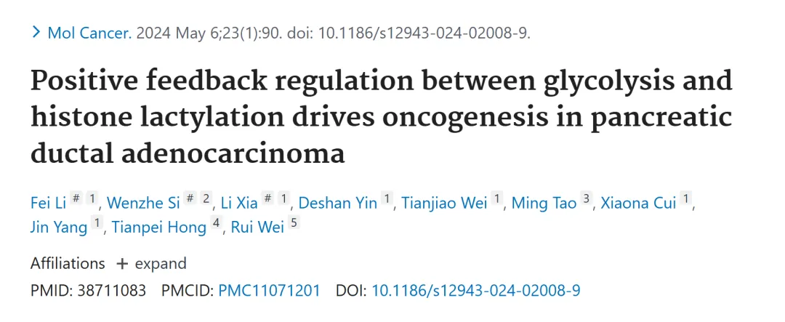
**** 胰腺导管腺癌（PDAC）因其高度侵袭性和治疗耐受性，成为全球范围内最具挑战性的恶性肿瘤之一。近年来，研究表明，代谢重编程与表观遗传调控 之间的复杂交互在PDAC的发生和发展中起着至关重要的作用。作为糖酵解** 的关键代谢产物，乳酸 不仅为肿瘤细胞提供能量和生物合成原料，还通过组蛋白乳酸化 等表观遗传修饰影响基因表达模式，进而驱动肿瘤恶性进程。然而，糖酵解与组蛋白乳酸化之间的调控网络 及其对PDAC微环境的影响仍需进一步阐明。本研究旨在探索PDAC中糖酵解通路与组蛋白乳酸化修饰的动态相互作用，揭示其潜在的分子机制和临床意义。我们发现，PDAC肿瘤微环境中乳酸水平显著升高，伴随特定组蛋白乳酸化位点的异常激活，这些变化与肿瘤增殖、侵袭及患者预后密切相关 。此外，通过整合多组学分析和功能实验，我们鉴定出一系列关键调控因子，初步构建了糖酵解与表观遗传修饰协同驱动PDAC进展的分子模型 。这一研究不仅为理解PDAC的代谢-表观遗传轴提供了新视角，也为开发靶向干预策略奠定了理论基础。** 如果需要数据分析指导 、生信热点全文复现 、自测数据个性化分析 辅导、常态化实验学习，欢迎联系客服微信[Biomamba_zhushou]二、主要结果
**1.**组蛋白乳酸化水平升高与 PDAC 患者的不良预后相关
研究团队发现，PDAC患者的胰腺组织及细胞系（如MIA PaCa-2、PANC-1、AsPC-1和PL45）中的乳酸含量显著高于 正常邻近组织和人胰腺导管上皮细胞系hTERT-HPNE（图1A-B）。通过非靶向代谢组学分析，在PDAC患者与健康人群的血清样本中鉴定出222种差异代谢物，其中乳酸作为关键代谢物之一，肿瘤组中122种代谢物水平升高，100种降低，且KEGG分析显示这些代谢物富集于中心碳代谢（图1C-D）。利用Western blot和IHC技术检测发现，PDAC组织和细胞系中泛赖氨酸乳酸化（Pan Kla）和H3K18la水平显著上调 （图1E-F）。进一步通过IHC分析74例PDAC组织和72例癌旁组织，结果显示51.4%的PDAC样本具有高H3K18la水平，且其水平与AJCC分期呈正相关 （图1G-J）。Kaplan-Meier生存分析表明，H3K18la水平高的PDAC患者生存期明显短于水平低的患者，提示组蛋白乳酸化水平升高与PDAC患者的不良预后密切相关 （图1K）。
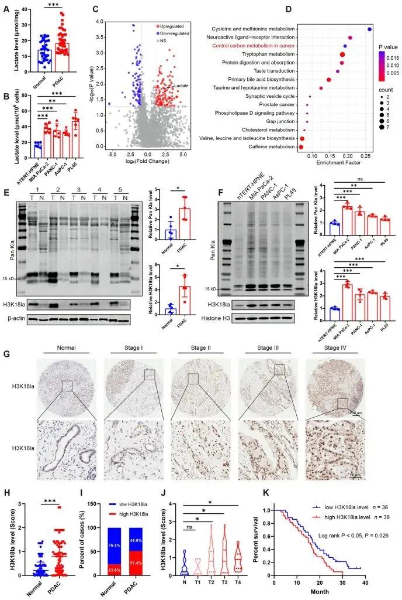
图1
2. 抑制糖酵解可降低组蛋白乳酸化水平并抑制 PDAC 细胞的增殖和迁移
为探究糖酵解对组蛋白乳酸化的影响，研究者在MIA PaCa-2和AsPC-1 PDAC细胞系中使用糖酵解抑制剂 （DCA、草酰胺和2-DG）及LDHA基因沉默 技术进行实验。Western blot分析显示，随着抑制剂剂量增加，泛赖氨酸乳酸化（Pan Kla）和H3K18la水平显著降低 （图2A-B），而si-LDHA转染有效降低乳酸化水平，但乳酸钠（NaLa）处理后乳酸化水平回升（图2C-D）。进一步通过IncuCyte S3和集落形成试验评估细胞增殖，结果表明DCA、草酰胺和2-DG处理显著降低细胞活力和集落形成能力 ，LDHA基因沉默同样抑制增殖 ，而NaLa部分逆转了si-LDHA的抑制效应（图3A-L）。此外，划痕愈合和Transwell试验显示，糖酵解抑制剂处理显著降低MIA PaCa-2和AsPC-1细胞的迁移能力 ，高剂量抑制效果更明显；LDHA基因沉默同样抑制迁移 ，但NaLa处理减弱了这一效应（图4A-P）。这些结果表明，糖酵解通过调控组蛋白乳酸化促进PDAC细胞的增殖和迁移，抑制糖酵解可显著降低乳酸化水平并发挥抗肿瘤作用 。
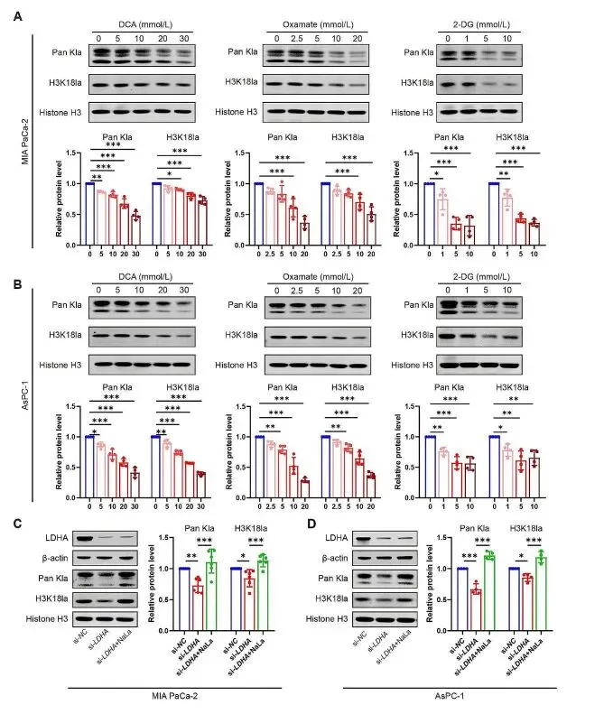
图2
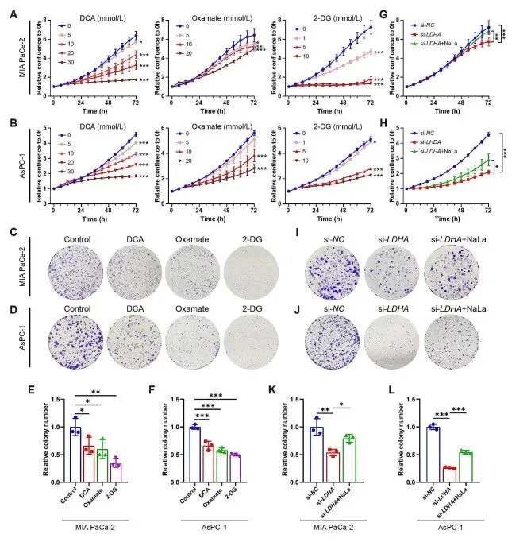
图3
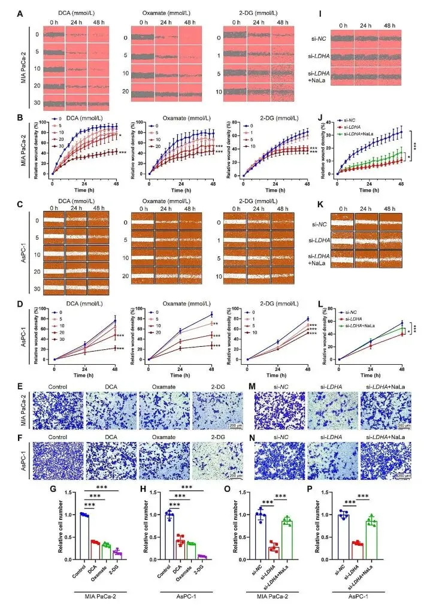
图4
3. 抑制糖酵解可降低组蛋白乳酸化水平并抑制PDAC异种移植小鼠模型中的肿瘤进展
为进一步验证组蛋白乳酸化在胰腺导管腺癌（PDAC）进展中的作用，作者通过将MIA PaCa-2细胞皮下注射至裸鼠体内建立了PDAC异种移植模型，并对小鼠施用糖酵解抑制剂草酰胺（750 mg/kg，每日）或载体处理，同时每两天监测肿瘤体积。结果显示，草酰胺组的肿瘤体积和重量显著低于对照组 （图5A-C）。此外，通过慢病毒介导的LDHA稳定基因沉默（sh-LDHA），与对照组相比，sh-LDHA组的肿瘤体积和重量同样显著减少 （图5I-K）。进一步分析表明，草酰胺处理和LDHA基因沉默均显著降低肿瘤组织中的乳酸含量 （图5D, L），并通过Western blot和IHC染色确认泛赖氨酸乳酸化（Pan Kla）和H3K18la水平显著下降 （图5E-F, M-N）。同时，Ki-67染色显示草酰胺和sh-LDHA处理降低了肿瘤细胞增殖，HE染色则表明肝脏转移灶减少（图5G-H, O-P）。这些结果表明，抑制糖酵解通过降低乳酸生成和组蛋白乳酸化水平，显著抑制PDAC异种移植模型中的肿瘤增殖和转移，显示出潜在的抗肿瘤效果 。
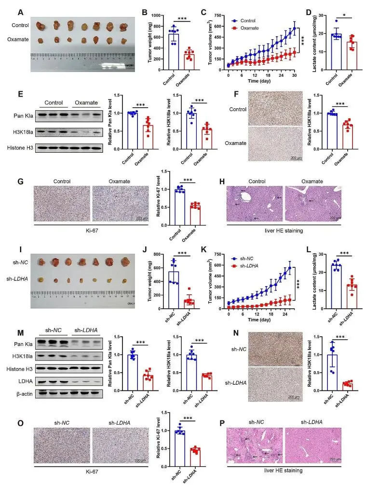
图5
4. P300和HDAC2分别是PDAC细胞中组蛋白乳酸化的潜在催化酶和清除酶
为探究胰腺导管腺癌（PDAC）中组蛋白乳酸化的调控机制，研究者在MIA PaCa-2和AsPC-1细胞系中评估了P300作为潜在催化酶 的作用，通过P300基因沉默（si-P300）或P300抑制剂C646处理，结合或不结合乳酸钠（NaLa）进行实验。Western blot分析显示，si-P300或C646处理显著降低泛赖氨酸乳酸化（Pan Kla）和H3K18la水平 ，即使在NaLa存在下仍保持抑制效果（图6A-B, S1A-B）。进一步通过IncuCyte S3和集落形成试验发现，P300基因沉默或C646处理显著抑制细胞增殖 ，划痕愈合和Transwell试验显示细胞迁移能力同样受损 ，且NaLa未能完全逆转这些抑制效应（图6C-J, S1C-J），表明P300促进PDAC细胞的增殖和迁移 。为鉴定组蛋白乳酸化的清除酶，测试了多种HDAC抑制剂，结果显示广谱HDAC抑制剂TSA和I类HDAC抑制剂CI994增加乳酸化水平，而IIa、IIb和IV类抑制剂无此效果（图S2A-B）。过表达实验进一步确认，HDAC2过表达显著降低Pan Kla和H3K18la水平 ，而HDAC1和HDAC3无明显影响（图S2C-H）。这些结果表明，P300作为组蛋白乳酸化的潜在催化酶促进PDAC进展，而HDAC2作为清除酶负调控乳酸化水平 。
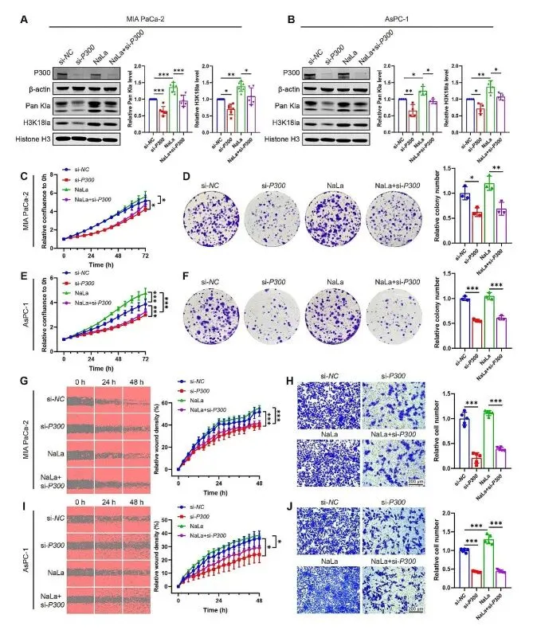
图6
5. H3K18la激活PDAC中TTK和BUB1B的转录
为阐明H3K18la在胰腺导管腺癌（PDAC）进展中的作用，研究者通过CUT&Tag试验分析H3K18la的基因组结合位点，发现在用糖酵解抑制剂草酰胺处理的MIA PaCa-2细胞中，转录起始位点（TSS）区域的H3K18la信号显著减少 ，且约53%的启动子区域富集H3K18la （图7A-C）。KEGG分析显示，这些下调的H3K18la峰与细胞周期、RNA转运和MAPK信号通路相关（图7D）。同时，RNA-seq分析揭示草酰胺处理后1259个基因上调、303个基因下调，下调基因同样富集于细胞周期通路（图7E-F）。通过整合CUT&Tag、RNA-seq和GEPIA数据库数据，筛选出14个在PDAC中高表达、草酰胺处理后mRNA水平降低且H3K18la启动子信号富集的基因，其中TTK和BUB1B 因其在细胞周期M期调控纺锤体组装检查点的作用而备受关注（图7G, S3C）。ChIP-qPCR验证了H3K18la在TTK和BUB1B启动子处的富集 ，糖酵解抑制剂（DCA、草酰胺、2-DG）显著降低这种富集（图7H-I）。此外，Western blot和qPCR分析显示，糖酵解抑制显著下调MIA PaCa-2细胞中TTK和BUB1B的mRNA和蛋白水平 （图7J-K）。这些结果表明，H3K18la通过富集于TTK和BUB1B启动子激活其转录，从而促进PDAC的恶性进展 。
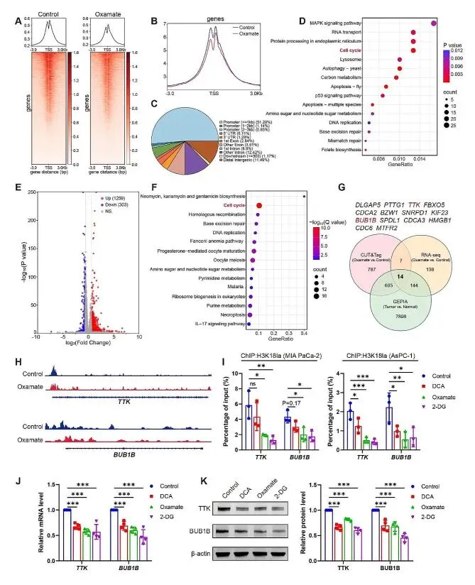
图7
6. TTK和BUB1B的高水平与PDAC的恶性程度相关
为探讨TTK和BUB1B在胰腺导管腺癌（PDAC）中的作用，研究人员通过免疫组织化学（IHC）分析发现，PDAC组织中TTK和BUB1B的表达水平显著高于癌旁组织 （图8C）。RT-qPCR和Western blot进一步确认，相比正常胰腺导管上皮细胞系hTERT-HPNE，四种PDAC细胞系（MIA PaCa-2、PANC-1、AsPC-1、PL45）中TTK和BUB1B的mRNA和蛋白水平均显著升高 （图8A-B）。GEPIA和GEO数据库分析也验证了TTK和BUB1B在PDAC组织中的高表达（图S4A-D）。此外，通过GEPIA和Kaplan-Meier Plotter数据库进行的生存分析显示，TTK或BUB1B高表达的PDAC患者相较于低表达患者，总生存时间和无病生存时间显著缩短 （图8D-G）。这些结果表明，TTK和BUB1B的高表达与PDAC的恶性程度密切相关，并可能作为预后不良的标志物 ，为PDAC的临床评估提供潜在靶点。
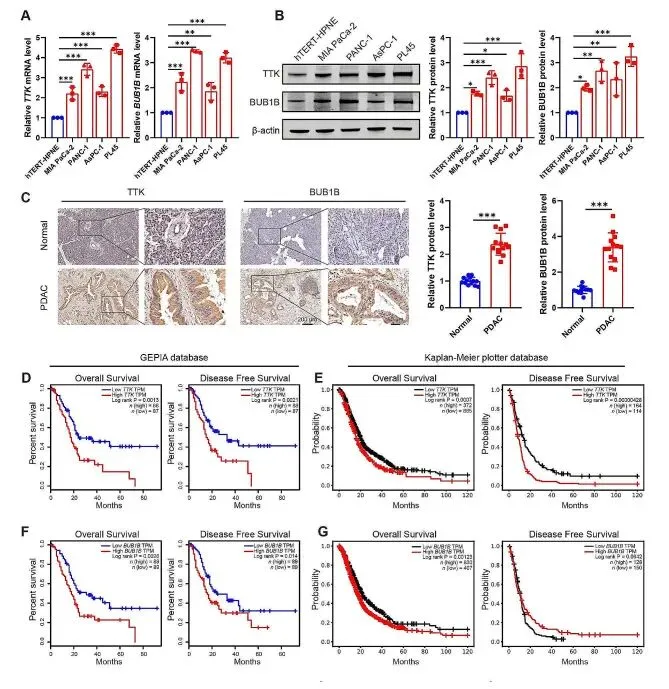
图8
7. TTK和BUB1B缺失抑制PDAC恶性程度，而TTK过表达部分削弱乳酸化抑制的抗癌作用
为评估TTK和BUB1B在胰腺导管腺癌（PDAC）中的功能作用，研究通过siRNA转染敲低MIA PaCa-2和AsPC-1细胞中的TTK和BUB1B表达，Western blot验证了敲低效率（图9A-B, S5A-D）。IncuCyte S3检测显示，敲低TTK或BUB1B显著降低细胞活力 （图9C-D），而划痕愈合和Transwell试验表明细胞迁移能力也明显受抑 （图9E-H）。为进一步探究TTK在H3K18la介导的PDAC进展中的作用，作者团队通过过表达质粒（oe-TTK）在MIA PaCa-2细胞中上调TTK表达，并结合糖酵解抑制剂（草酰胺或2-DG）处理（图9I）。结果显示，单独TTK过表达未显著促进细胞增殖或迁移，可能因PDAC中TTK水平已高至饱和（图S5E-F）。然而，TTK过表达与糖酵解抑制剂联合使用时，部分削弱了草酰胺和2-DG对细胞增殖和迁移的抑制作用 （图9J-L）。这些发现表明，TTK和BUB1B在PDAC恶性进展中发挥关键作用，且TTK通过参与H3K18la调控路径影响糖酵解抑制剂的抗癌效果 。
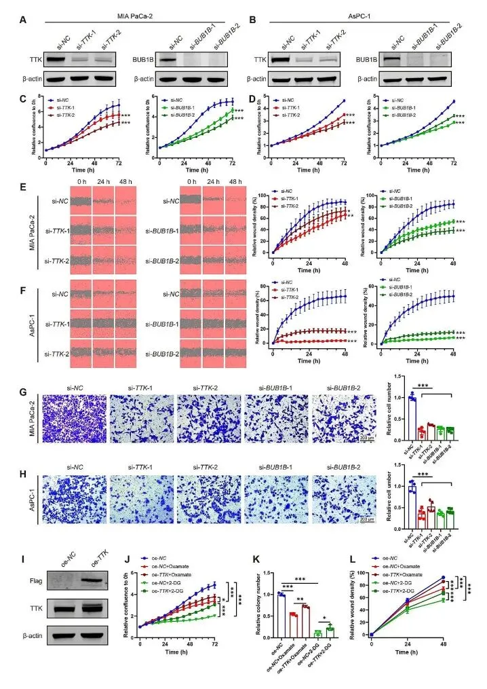
图9
8. H3K18la靶基因与糖酵解之间的正反馈环
为揭示H3K18la靶基因TTK和BUB1B在胰腺导管腺癌（PDAC）中的调控机制，研究人员通过siRNA敲低MIA PaCa-2和AsPC-1细胞中的TTK和BUB1B，发现P300蛋白水平显著降低 ，表明TTK/BUB1B通过上调P300（组蛋白乳酸化催化酶）形成正反馈调控 （图10A-B）。进一步研究TTK对糖酵解的影响，通过共免疫沉淀（Co-IP）试验确认TTK与LDHA在MIA PaCa-2和AsPC-1细胞中存在直接相互作用 （图10C-D）。Western blot分析显示，TTK基因沉默显著抑制LDHA在Y239位点的磷酸化 ，而Y10位点磷酸化影响不显著（图10E-F, S6B-C）。LDHA活性测定和乳酸水平检测表明，TTK敲低降低LDH活性及乳酸生成 （图10G-J），进而减少泛赖氨酸乳酸化（Pan Kla）和H3K18la水平 （图10K-L）。这些结果表明，TTK通过磷酸化激活LDHA，促进乳酸生成和H3K18la水平 ，而BUB1B可能通过调控糖酵解相关基因（如LDHA）增强代谢活性，共同形成糖酵解-H3K18la-TTK/BUB1B正反馈环，加剧PDAC的恶性进展 。
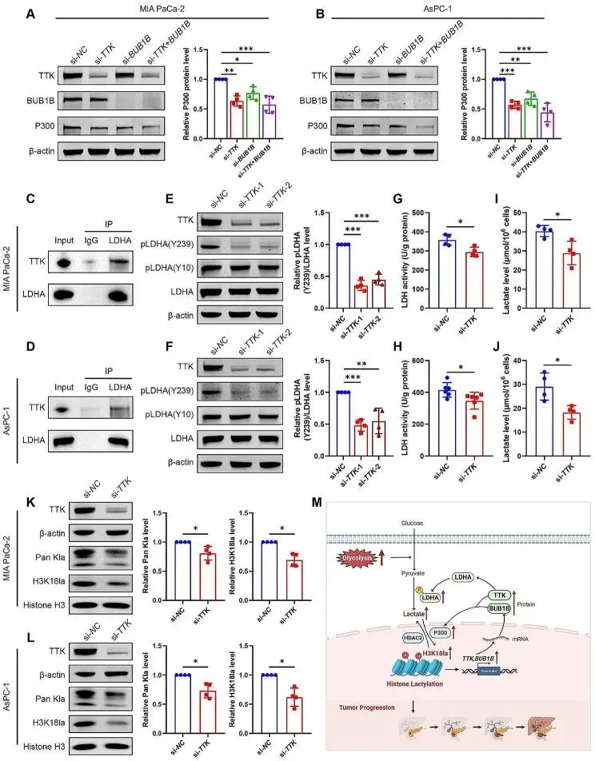
图10总结讨论
本研究深入探讨了糖酵解与组蛋白乳酸化在PDAC中的协同作用 ，揭示了这一代谢-表观遗传轴在肿瘤发生和进展中的核心地位 。我们发现，PDAC中异常活跃的糖酵解通路通过乳酸积累诱导组蛋白乳酸化修饰，进而调控关键癌基因的表达，促进肿瘤细胞的恶性表型 。这一过程不仅反映了PDAC对代谢重编程的高度依赖，也凸显了表观遗传修饰在肿瘤微环境适应性中的重要性。然而，本研究的局限性不容忽视。例如，组蛋白乳酸化的位点特异性及其与其他表观遗传修饰的潜在交叉作用尚未完全解析。此外，尽管我们在细胞和动物模型中验证了关键发现，但这些结果在临床样本中的普适性仍需更大规模的队列研究加以确认。未来研究应聚焦于全面绘制PDAC中组蛋白乳酸化的动态图谱，探索其与其他代谢通路的交互，并评估靶向这一调控轴的治疗潜力 。结合单细胞测序和代谢组学技术，或可进一步揭示PDAC异质性背后的分子机制，为精准医学提供新的突破口。这些努力将有助于将基础研究成果转化为临床应用，最终改善PDAC患者的预后。对实验技能学习感兴趣的同学不妨看看：实验基地7月最新安排

如何联系我们

 留一个领取资料、免费两周学习版服务器的微信号[Biomamba_zhushou]，方便各位随时交流。同时我们也构建了交流群矩阵，欢迎大家入群讨论。
大家可以阅读完这几篇之后添加给生信入门初学者的小贴士
没有检索，就没有发言权
留一个领取资料、免费两周学习版服务器的微信号[Biomamba_zhushou]，方便各位随时交流。同时我们也构建了交流群矩阵，欢迎大家入群讨论。
大家可以阅读完这几篇之后添加给生信入门初学者的小贴士
没有检索，就没有发言权
已有生信基地联系方式的同学无需重复添加

 您点的每个赞和在看，我都认真当成了喜欢
您点的每个赞和在看，我都认真当成了喜欢